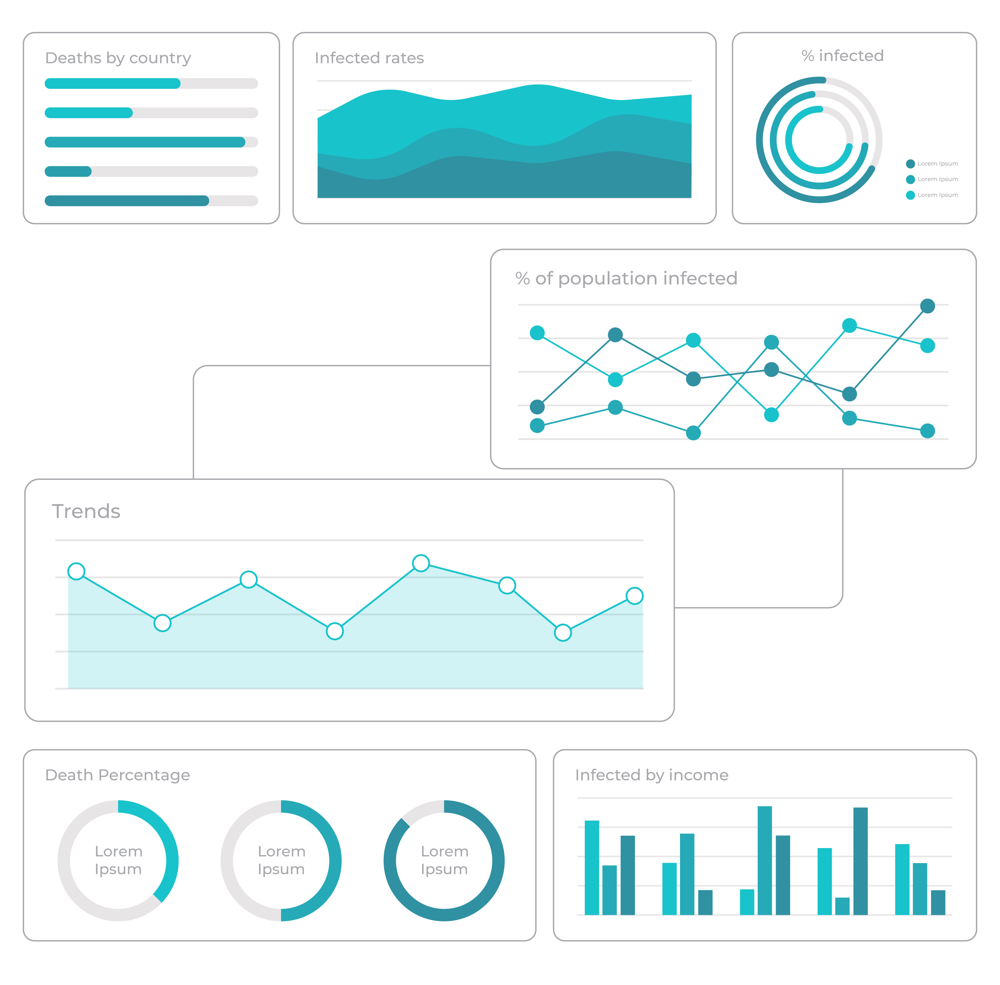

March, 2022
Data exploration for future visualization from COVID global cases and vaccination over the last 3 years.
First step of data analysis to explore and visualize data to uncover insights from the start or identify areas or patterns to dig into more. Looking to understand the bigger picture and get to insights faster.

Validating insights to spot metrics and performance for each team that inform that inform and influence data driven business strategies and servicing.
Performance insights by day and month to see productivity trends for each team's analysts and deliver planning partnering with operations.

In this Tableau's dashboard you will see overall numbers, quick visualization tools and a forecasting model for future infection percentages for 2023.
You will soon be able to see this proyect!
Fixing and removing incorrect, corrupted, incorrectly formatted, duplicate, or incomplete data for a demographic dataset making it reliable for future data driven decisions.

You will soon be able to see this proyect!